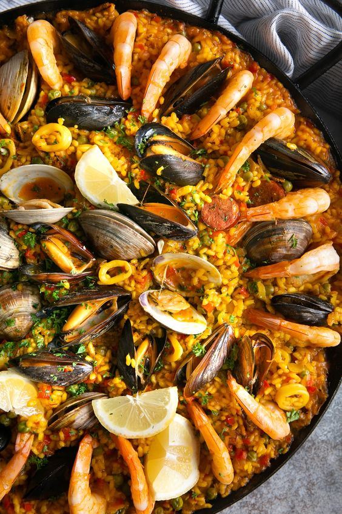
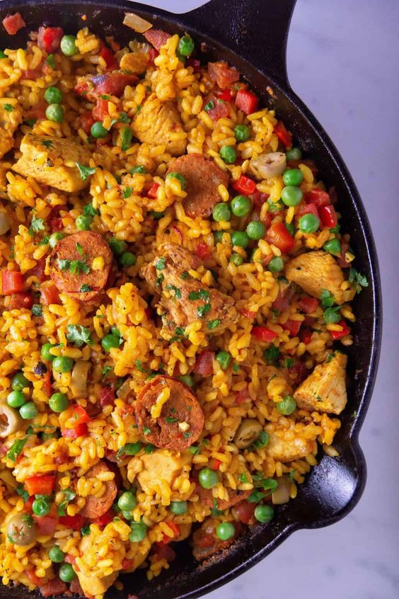
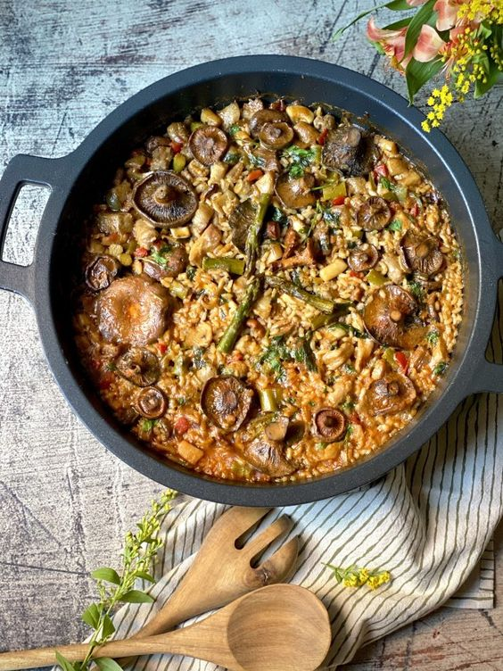

Nuestras Paellas, un Viaje Gastronómico
Desde la emblemática Paella Valenciana, fieles a las raíces tradicionales, hasta creaciones innovadoras que despiertan los sentidos, cada paella es un cuento contado con arroz, especias y los ingredientes más frescos. Hemos reunido una variedad que celebra la diversidad culinaria, trayendo a tu mesa los aromas del mar, la riqueza de la tierra y la calidez de la tradición.



Paella Valenciana: La clásica, con pollo, conejo, judías verdes, garrofón, tomate y azafrán, elaborada con el tradicional arroz de Valencia.
Paella de Mariscos: Abundante en variedad marina, con langostinos, calamares, mejillones, almejas y trozos de pescado fresco, cocinados con arroz en un caldo sabroso.
Paella Mixta: Una combinación perfecta de carnes y mariscos, con pollo, cerdo, mariscos variados y vegetales, todo en armonía sobre el arroz.
Paella de Verduras: Ideal para los amantes de lo vegetal, con una mezcla de verduras frescas como pimientos, judías verdes, alcachofas, tomate y guisantes, enriquecida con un caldo aromático.
Paella Negra: Una paella con un toque singular gracias a la tinta de calamar, que le otorga su característico color oscuro y un sabor intenso, acompañada de mariscos.
Paella de Setas: Elaborada con una selección de setas frescas, como champiñones, setas silvestres y shiitake, resaltando los sabores de la tierra.